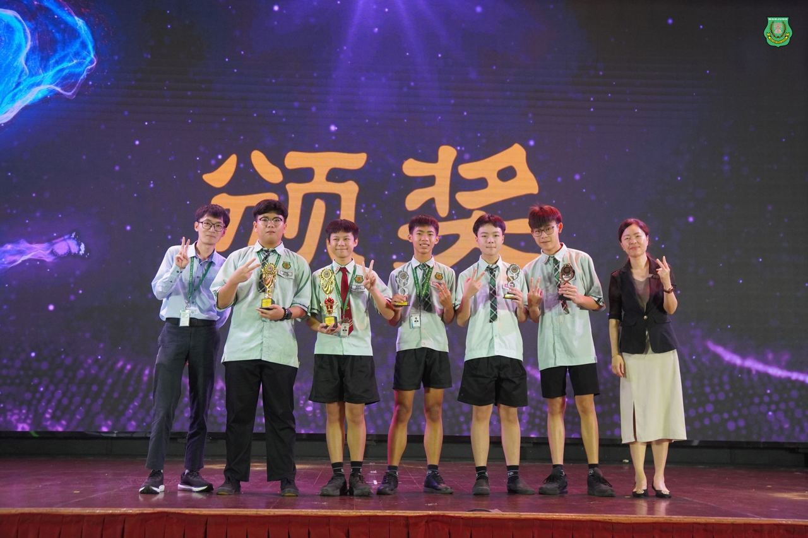
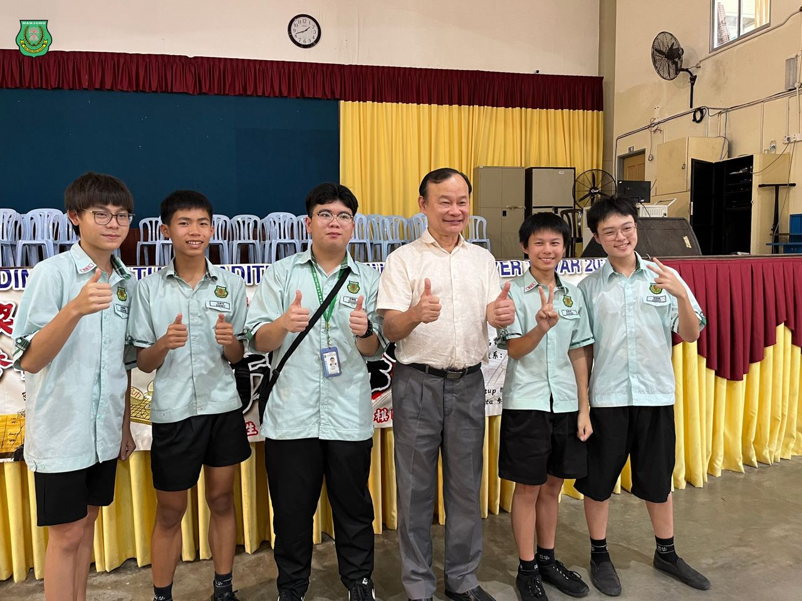
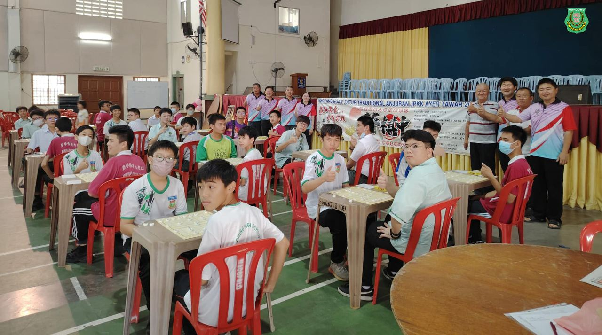
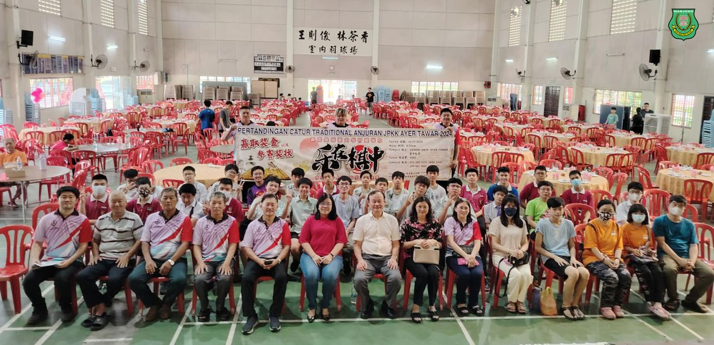
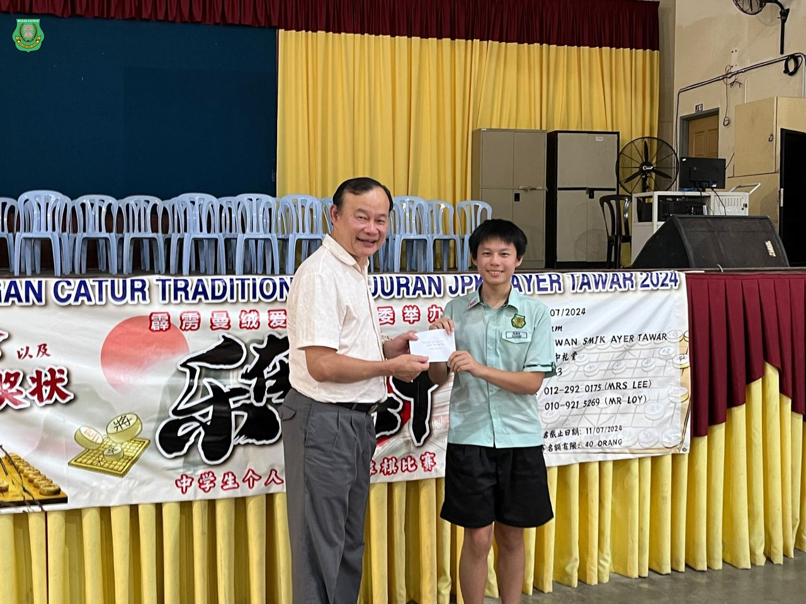
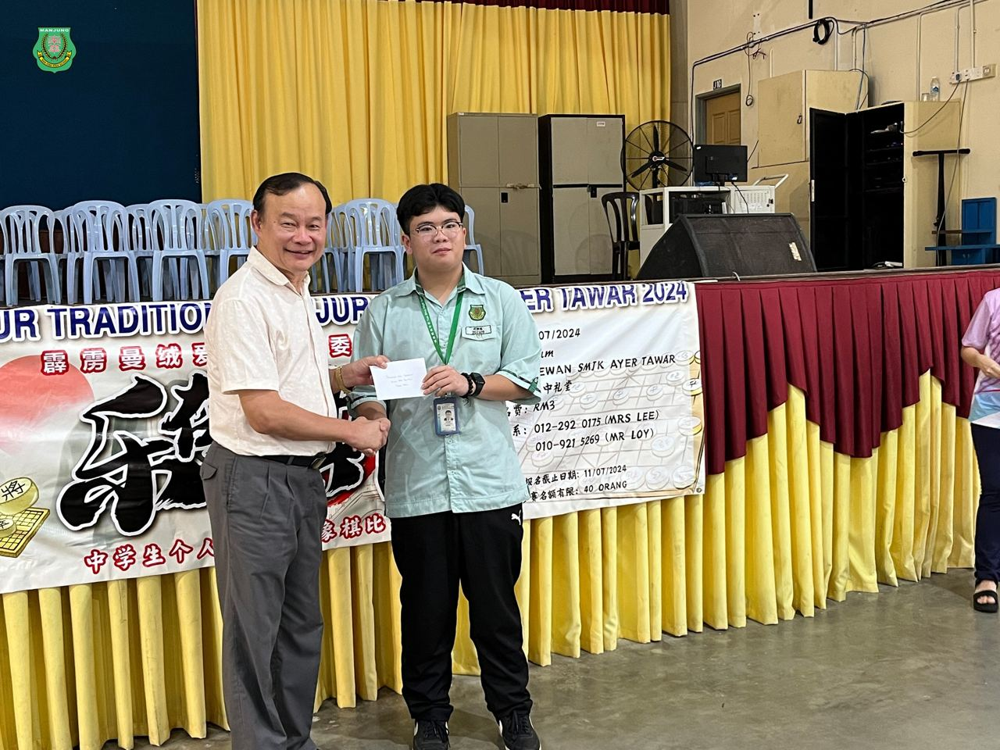
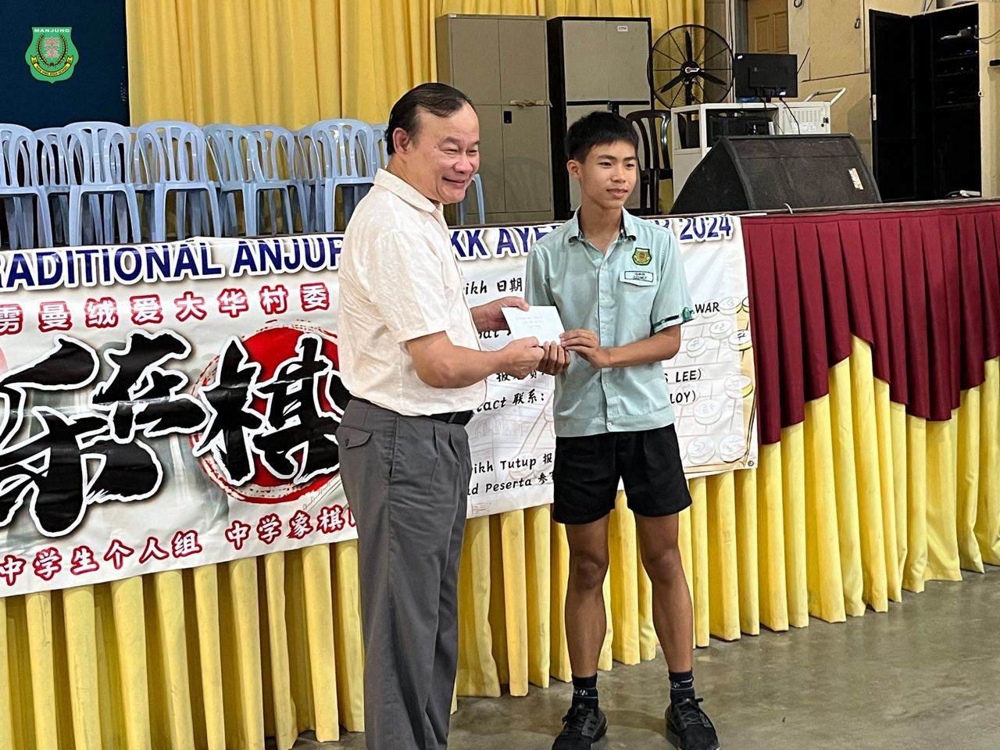
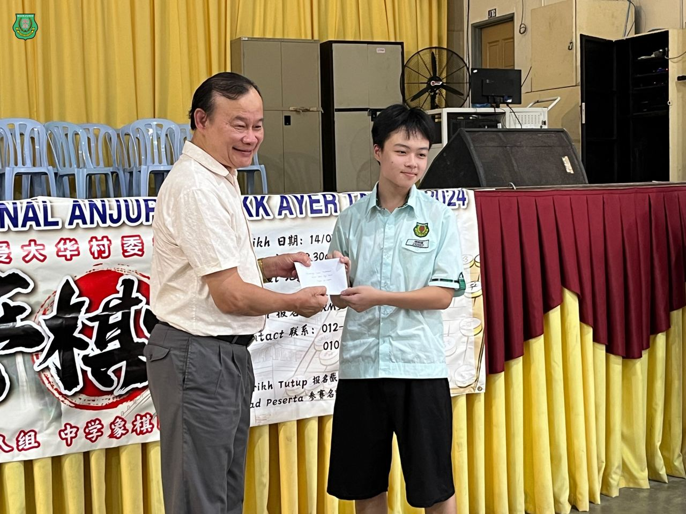

南华独中学生棋艺卓越
南华独中学生棋艺卓越
包揽爱大华象棋赛前五名
南华独中五位学生凭借卓越棋艺，成功包揽爱大华举办的2024年中学组中国象棋比赛《乐在棋中》比赛前五名，载誉而归。
获奖名单如下：
冠军: 陈逸丰
亚军: 苏靖铭
季军: 马孝祥
殿军: 杨楷镐
第五名: 林恺轩
南华独中校长陈丽冰博士对棋社学生的优异表现给予肯定，并恳切祝福学生们在学业之外的领域也要捉紧机会，全力以赴展现自己的努力成果。"
棋社指导教练柯家浚老师对学生们的表现感到欣慰和自豪，尤其是学生除了日常的训练，还会利用闲暇时间自主学习，研究棋谱，显示出学生对象棋的热爱和执着。柯老师特别强调“学生们的优良棋品和礼让精神让我留下了深刻印象。赛后能与对手进行友好交流和互相指导，胜不骄败不馁，还主动与教练复盘分析自己的失误。这种态度比起成绩更让我感到欣喜。”对于学生们的未来，柯老师充满期待，并认为他们都极具潜力。希望他们能继续保持这份热情和谦逊的态度，在更广阔的舞台上绽放光彩。







